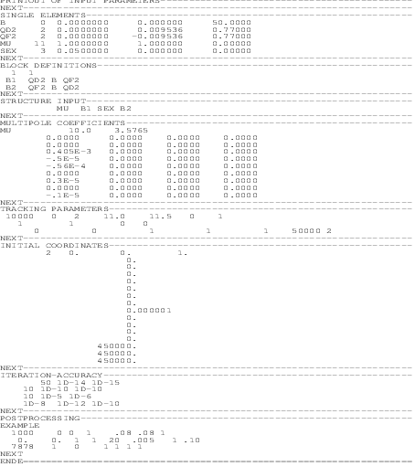
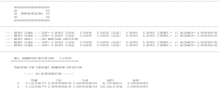
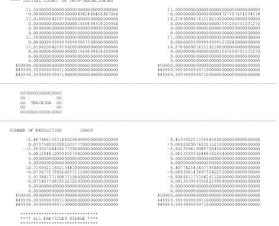
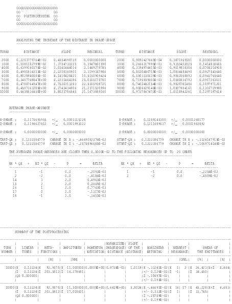
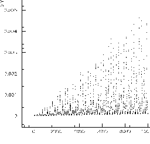
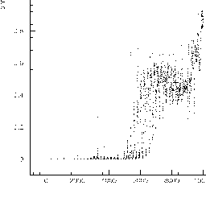
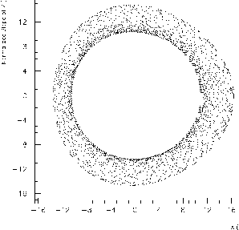
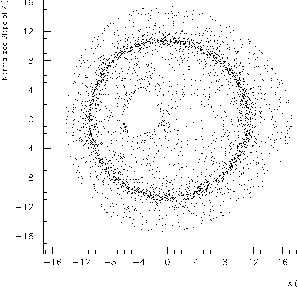
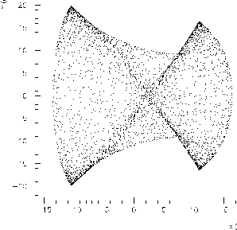
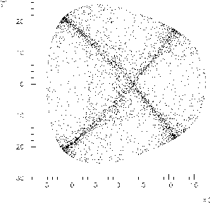

In figure E.1 a typical example of the evolution of the distance in phase space is shown of a regular and chaotic particle. Figure E.2 and figure E.3 show the corresponding horizontal phase space and the physical phase space projections respectively. An example of the stroboscoped phase space is shown in figure E.4, where the motion in the chaotic case is beyond a “separatrix” in the four–dimensional phase space. Even in the FFT (figure E.5) one can see the effect of chaotic behaviour: it leads to a widening of the lines of the spectrum.









